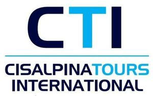

Trade Mark Journal No.2025/025 20 June 2025
WO0000001857820 (39,41,43)
Office of origin: Italy
Date of International Registration:25 February 2025
Date of designation in the UK:
25 February 2025

The mark consists of the words “CTI CISALPINATOURS INTERNATIONAL” in fancy letters and figurative elements, as shown in the attached specimen.
The mark contains the colours black and light blue.
In black: letters “C” and “I” of word CTI; words “CISALPINA” and “INTERNATIONAL”; in light blue: letter “T” of word CTI; word “TOURS”; horizontal line between “CTI” and CISALPINATOURS.
- Class 39
- Escorting of travellers; arranging of cruises; arranging of transportation for travel tours; arranging for travel visas and travel documents for persons travelling abroad; travel reservation; booking of seats for travel; chauffeur services; bus transport; transport services for sightseeing tours; passenger transport; transport of travellers; ferry-boat transport; transport.
- Class 41
- Academies [education]; coaching [training]; conducting guided tours; conducting fitness classes; music education; escape room [entertainment]; practical training [demonstration]; providing training and educational examination for certification purposes; entertainment information; education information; providing information relating to recreational activities; providing user reviews for entertainment or cultural purposes; providing online virtual guided tours; gymnastic instruction; organization of sports competitions; organization of cosplay entertainment events; organization of competitions [education or entertainment]; organization of exhibitions for cultural or educational purposes; arranging and conducting of entertainment events; arranging and conducting of sports events; arranging and conducting of in-person educational forums; arranging and conducting of concerts; arranging and conducting of congresses; arranging and conducting of colloquiums; arranging and conducting of seminars; arranging and conducting of symposiums; arranging and conducting of workshops [training]; entertainment party planning; vocational guidance [education or training advice]; vocational retraining; entertainment services; physical education; health club services [health and fitness training]; educational services provided by schools; know-how transfer [training].
- Class 43
- Rental of holiday accommodation; temporary accommodation provided by halfway houses; rental of temporary accommodation; hotel reservations; temporary accommodation reservations; boarding house bookings; reception services for temporary accommodation [conferment of keys]; reception services for temporary accommodation [management of arrivals and departures]; hotel accommodation services; tourist home services; motel services; boarding house services; restaurant services.
CISALPINA TOURS S.P.A.
Representative: Forresters IP LLP, Rutland House, 148 Edmund Street Birmingham B3 2JA UNITED KINGDOM